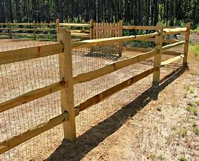
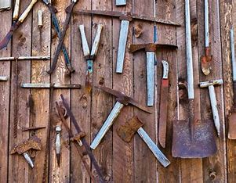
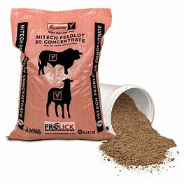

OUR PRODUCTS
At Rugged Ridge Ranch Supply Co., we offer a wide range of high-quality ranching products to meet your every need. Whether you're managing a large ranch or a small homestead, our products are built to last and designed to make your life easier.
**FENCING SUPPLIES**
Our durable fencing supplies are perfect for keeping your livestock secure and your property protected. From barbed wire to sturdy posts, we've got everything you need.
**RANCH TOOLS**
We carry a wide selection of tools to help you tackle any ranching task. From hammers and pliers to specialty tools, our products are designed with the rancher in mind.
**LIVESTOCK FEED**
Our premium livestock feed ensures your animals stay healthy and strong. We offer feed for cattle, horses, chickens, and more, all formulated with the best ingredients.
